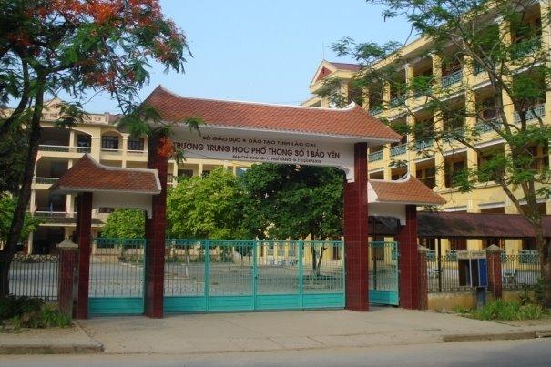
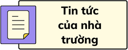
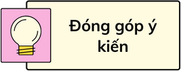
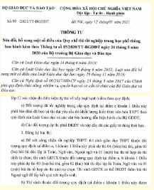

Trường THPT Số 1 Bảo Yên




Trường THPT số 1 Bảo Yên soi bóng bên dòng sông Chảy trong xanh, giữa trung tâm thị trấn Phố Ràng. Trong hồi ức của học sinh những khóa đầu tiên, ngày mới thành lập huyện (03/03/1965), nhân dân các dân tộc huyện Bảo Yên còn đói nghèo, gian khó. Nhằm đáp ứng nguyện vọng tha thiết của nhân dân, với tầm nhìn chiến lược, các đồngchí lãnh đạo huyện Bảo Yên khi ấy đề nghị thành lập trường cấp III. Ngày 15/08/1968, trường cấp III Bảo Yên (Tiền thân của trường THPT số 1 Bảo Yên ngày nay) được thành lập. Thành lập trường cấp III là sự kiện đánh dấu một bước phát triển dài của ngành Giáo dục Bảo Yên.


Hôm nay, ngày 04 tháng 11 năm 2023 trong không khí đầm ấm, cởi mở, thắm tình đồng chí, đồng nghiệp, BGH phối hợp cùng Công đoàn trường THPT số 1 Bảo Yên long trọng tổ chức buổi gặp mặt và chia tay nhà giáo Đỗ Anh Tuấn luân chuyển công tác, nhận nhiệm vụ mới. Đây là việc làm thể hiện nghĩa cử cao đẹp của tình đồng chí, đồng nghiệp giữa người đi và người ở lại đơn vị. Đến dự buổi chia tay có các đồng chí là lãnh đạo các trường THPT Hạ Hòa, Phú Thọ; THPT Hồng Quang, Yên Bái; THPT số 2,3 Bảo Yên; PTDTNT THCS &THPT huyện Bảo Yên; Ban đại diện Hội cha mẹ học sinh cùng toàn thể cán bộ, giáo viên, nhân viên trong nhà trường cũng có mặt đông đủ.
Ngữ văn là môn học đặc thù trong nhà trường phổ thông. Để mỗi giờ học văn lắng đọng trong tâm hồn học trò, các nhà giáo cần tích cực đổi mới phương pháp dạy và học bằng các phương pháp
Thông tư số 15/2020/TT-BGDĐT ngày 26/05/2020 của Bộ trưởng GD&ĐT
